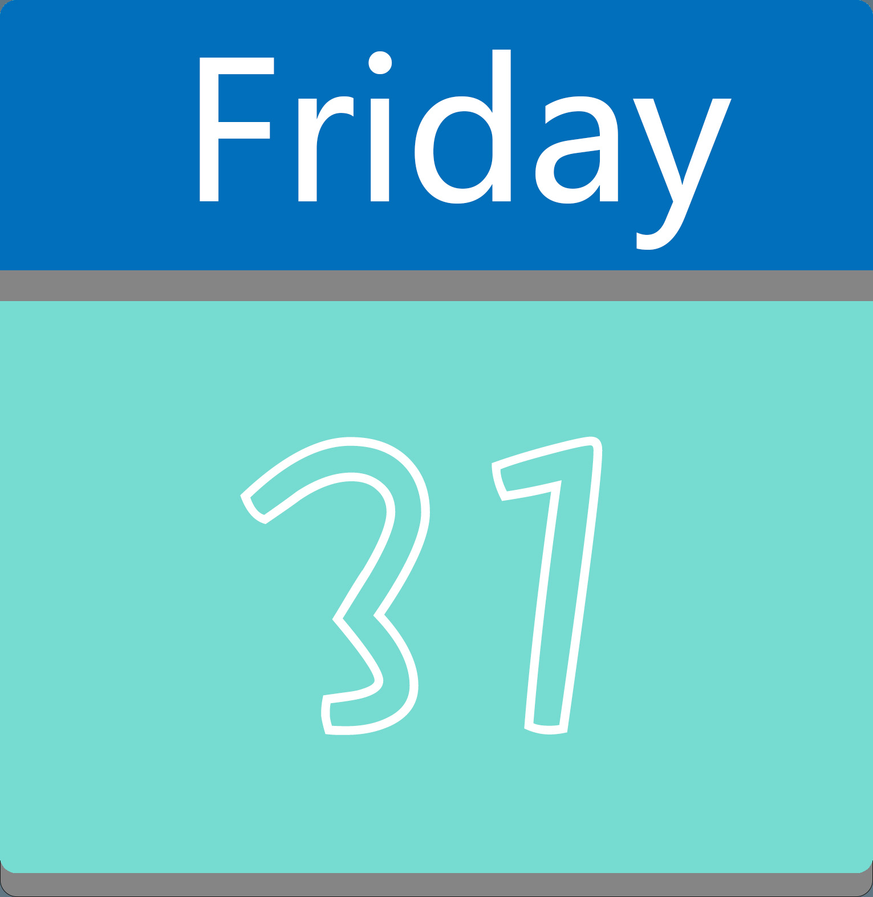
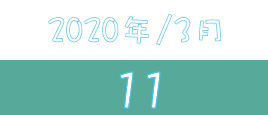

-
保持乐观
REMAIN OPTIMISTIC
希望是我们这个时代，像钻石一样珍贵的东西。逾是黑暗的时候，愈能闪光。不管局面有多恶劣，只要我们心存希望，新的转机就会从人心的地平线上升起，一寸寸照亮大江南北。 -
铭记生命
REMEMBER LIFE
有一盏灯灭了，但这个世界，被燃得更亮。没有曜灵升起，没有繁星如沸，点点萤火，也可以汇聚成璀璨星河，照亮一度被迷雾笼罩的人间。只是，等有一天迷雾散去，人间灯火通明，请不要忘记，曾有一盏灯，用自己的微光撕开了暗夜的一角，又经千万人接力，才让这世间薪火不灭，温澜潮生。


-
{{data.ftime}}
{{data.title}}
发布者：{{data.wx_name}}
2019年12月31日
- 中国报告了湖北省武汉市的一组肺炎病例，最终确认了一种新型冠状病毒...
2020年1月12日
- 中国科学院武汉病毒所获得新冠病毒全基因组序列，并向全世界分享，香港检视针对疫情的预防措施...
2020年1月16日
- 武汉卫健委称截止1月15日24时，累计有41例...
2020年1月19日

- 武汉卫健委称部分病例没有华南海鲜批发市场接触史，广东确认首例输入性确诊病例...
2020年1月21日

- 世卫组织称新冠肺炎可能持续“人传人”,武汉15例医护人员感染...
2020年1月22日
- 国家卫健委发布第三版诊疗方案，武汉要求全市在公共场所佩戴口罩，湖北启动突发公共卫生事件二级应急响应...
2020年1月23日
- 早10点，武汉封城，火神山医院开建，多地进入重大突发公共卫生事件一级应急响应...
2020年1月26日

- 全国累计确诊病例超过2000人，雷神山医院开建，国家卫建委称新冠病毒潜伏期最长14天且具有传染性...
2020年1月28日
- 疫情救治费用个人负担部分由财政给予补助，WHO称新型冠状病毒对全球构成高风险...
2020年1月29日
- 全国31个省市自治区及港澳台地区均现确诊病例，西藏启用重大突发公共卫生事件一级响应...
2020年1月31日
- 
- 全国累计确诊病例超过10000人。...
2020年2月2日
- 火神山医院得到正式交付，湖北将集中隔离所有疑似病例，全国铁路客运车站开展进站或出站测温工作...
2020年2月3日
- 全国累计确诊病例超过20000人，武汉建筑“方舱医院”用于收治轻症患者...
2020年2月6日
- 全国累计确诊病例超过30000人，湖北给予张定宇和张继先记大功奖励，瑞德西韦临床试验启动...
2020年2月7日
- 李文亮医生殉职，国家监察委员会决定全面调查李文龙医生事件，深圳、成都、广州所有小区实现封闭式管理...
2020年2月8日
- 王贺胜调任湖北省常委，陈一新担任中央指导组组长。火神山医院接收第一批确诊患者，雷神山医院交付使用...
2020年2月9日
- 全国累计确诊病例超过40000人，呼和浩特卫健委主任被免职...
2020年2月12日
- 全国累计确诊病例超过50000人，砖石公主号新增39例确诊病例，累计174例...
2020年2月13日
- 全国累计确诊病例超过60000人，应用担任湖北省委书记，王忠林任武汉市委书记...
2020年2月16日
- 全国累计确诊病例超过70000人，国家卫健委称全国各地疫情防控效果已显现...
2020年2月19日
- 云南出现首例新冠肺炎死亡病例，湖北省外新增确诊病例16连降，全国13地新增病例为0...
2020年2月24日

- 广东省决定重大突发公共卫生事件一级响应调整为二级响应，世卫组织称中国疫情顶峰已过，尚未构成全球性大流行...
2020年2月27日
- 日本累计确诊新冠肺炎891例，砖石公主号累计确诊705例，伊朗副总统新冠病毒检测呈阳性...
2020年3月1日
- 武汉首家“方舱医院”休舱，31省市新增202例新冠肺炎患者，累计病例破80000例，国家卫建委表示全国治愈出院比例达到52.1%...
2020年3月2日
- 意大利新冠肺炎确诊病例累计1694例，国家卫健委称武汉疫情快速上升态势得到控制...
2020年3月11日
- 
- 世卫组织评估后，认为可将新冠肺炎视为大流行，至此世界各国开始陆续出现新冠肺炎确诊病例，欧洲已经开始出现大范围流行...
2020年3月13日
- 世界卫生组织成立了“新冠肺炎团结应对基金”，以接收个人，公司和机构的捐款...
2020年3月18日
- WHO发起了“团结试验”，这是一项国际临床试验，旨在通过在世界各地产出可靠数据，以找到最有效的新冠肺炎治疗方法...